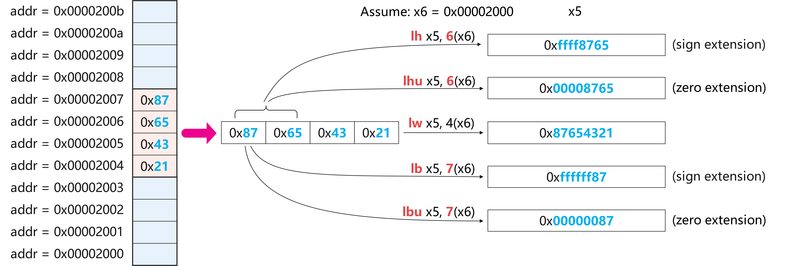
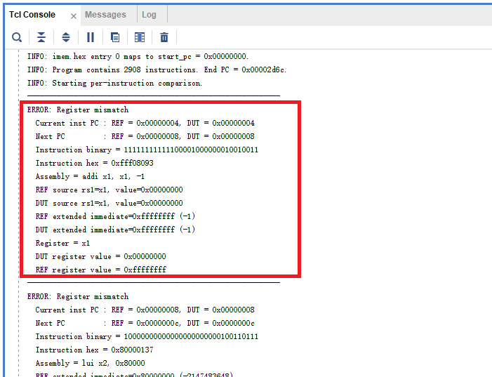

实验六 RV32I 全指令单周期 CPU 设计
在实验五中设计的单周期 CPU 的基础上，我们将在本实验中完善指令集，实现 RV32I 集中的大部分指令，并通过仿真验证。
1. 待实现的 RV32I 指令
待实现的 RV32I 指令如下图，最后两行的 ecall 和 ebreak 指令除外。

如果需要查看各指令的详细描述，请参考 RISC-V 指令集手册，手册在 git 仓库中已提供，这里再次提供下载链接：下载 The RISC-V Instruction Set Manual_20260120.pdf。文档比较长，可以用 Ctrl+F 搜索指令助记符，找到对应的指令描述。
一部分指令的实现方式与上次实验中的数据通路非常类似，例如 sll 、srl、sra 等指令的实现方式与 add、sub、and、or 指令类似，只是 ALUctrl 的值不同。
但以下几类指令的实现需要 新增 数据通路，必须理解指令功能，因此特别说明。
slt | sltu | slti | slitu 指令
slt 和 sltu 指令将寄存器 rs1 和 rs2 的值分别视为有符号和无符号数，并进行比较。如果 rs1 < rs2， rd = 1，否则 rd = 0。
slti 和 sltiu 指令将寄存器 rs1 的值和立即数 imm 的值分别视为有符号和无符号数，并进行比较。如果 rs1 < imm， rd = 1，否则 rd = 0。
前序实验的 ALU 设计中已经完成比较功能并输出了 lt 和 ltu 标志位。 这两个标志位可以直接作为 slt、sltu、slti、sltiu 指令的判断依据。只需要在 ALU 模块中增加将 ALU 的输出值 set 为 1 或 0 的功能即可。
lw | lb | lh | lbu | lhu 指令
实验五中已经把 dmem, imem, 以及存储核心模块 sram 提供给大家，sram 代码如下。本次需要考虑到 load 指令的 字节对齐 问题。
代码中所示的 dmem 模块中地址 addr 是按 byte 寻址的，但是核心存储模块 sram 的地址 ADDR 是按 word 对齐的。因此 dmem 在调用 sram 时，需要把地址 addr 的低两位去掉，取 addr[15:2] 作为 sram 的地址 ADDR 进行读写操作。
1module dmem (
2 input wire clk,
3 input wire [31:0] addr,
4 input wire [31:0] wdata,
5 input wire write_en,
6 output wire [31:0] rdata,
7 ...
8);
9
10 ......
11
12 sram #(.AW(14)) u_sram (
13 .CLK (clk),
14 .ADDR (addr[15:2]), // 字节地址 -> 字地址：取 addr[15:2]
15 .WDATA (...),
16 .WREN (...), // 4 个字节的写使能
17 .RDATA (...)
18 );
19
20endmodule
21
22module sram #( parameter AW = 14) (
23 input wire CLK
24 ,input wire [AW-1:0] ADDR
25 ,input wire [31:0] WDATA
26 ,input wire [3:0] WREN
27 ,output wire [31:0] RDATA
28);
29 localparam AWT = ((1<<(AW-0))-1);
30
31 // Memory Array
32 reg [31:0] sram [AWT:0];
33
34 // Write, byte-based enable, synchronous
35 always@(posedge CLK) begin
36 if(WREN[0]) sram[ADDR][ 7:0] <= WDATA[ 7:0];
37 end
38 always@(posedge CLK) begin
39 if(WREN[1]) sram[ADDR][15:8] <= WDATA[15:8];
40 end
41 always@(posedge CLK) begin
42 if(WREN[2]) sram[ADDR][23:16] <= WDATA[23:16];
43 end
44 always@(posedge CLK) begin
45 if(WREN[3]) sram[ADDR][31:24] <= WDATA[31:24];
46 end
47
48 // Read, word based, asynchronous
49 assign RDATA = sram[ADDR];
50
51endmodule
由于 sram 地址是 word 对齐的，所以读操作每次只能返回一个完整的 32-bit 的 word，而不能返回一个单独的 byte 或 half word。因此在实现 lb、lh、lbu、lhu 指令时，需要在读出来的 32-bit word 中根据地址的低两位 addr[1:0] 选择对应的 byte 或 half word，并根据指令类型进行符号扩展或零扩展，如图所示。这部分是需要你自行在 dmem 模块中 补充 完成的。

sw | sh | sb 指令
sw 的功能实验五中已经实现，难点是 sb 和 sh 指令的 字节对齐 问题。
sb 只取寄存器 rs2 值的低 8 位数值进行写入，sh 取 rs2 值的低 16 位数值进行写入。这种只写入一部分值的操作在 sram 模块中已经实现了，即用 WREN 信号的 [3:0] 位分别对 4 个字节进行写使能控制。因此在 dmem 中需要根据指令类型和地址的低两位 addr[1:0] 改变 WREN 的值，从而对 4 个字节分别进行写入控制。这部分是需要你自行在 dmem 模块中 补充 完成的。
jal | jalr 指令
jal 和 jalr 指令需要进行跳转，因此需要在 CPU 中 添加 PC 的更新逻辑。另外，这两条指令的 rd 寄存器需要写入 PC + 4 的值，作为返回地址，这个逻辑也需要 补充。
跳转地址必须是 2 的倍数，也是需要重点考虑的问题。jal 指令的跳转地址是 PC + imm，PC 和 J 型指令的 imm 字段都保证了跳转地址是 2 的倍数；jalr 指令的情况更复杂，其跳转地址是 rs1 + imm，而 I 型指令的 imm 字段并没有特殊处理。因此需要将 jalr 的跳转地址的 最低位强制置为 0，以保证跳转地址是 2 的倍数，这一点需要你在代码中进行设置。
2. 实验内容
单周期 CPU 设计
必做内容1：单周期 CPU 数据通路设计
参考实验五中 7 条指令的数据通路设计，画出本次实验的单周期 CPU 数据通路图。
必做内容2：单周期 CPU verilog 代码设计
根据你画出的数据通路图，完成单周期 CPU 的 verilog 代码设计。为了防止 testbench 中抓取信号时因找不到而报错，请按以下规则设计：
顶层 module 名为 "single_cycle_cpu"
顶层 module 有三个端口 "clk"、"reset"、"[31:0] start_pc"。
reset 为同步复位、高有效，reset 后 PC = start_pc
顶层存在 5 个 wire 变量，名字为："pc"、"inst"、"read_data_1"、"read_data_2"、"imm"
寄存器堆例化的实例名为 u_regfile，regfile 模块内必须包含名为 regs 的结构（32 × 32bit）
数据 memory 例化的实例名为 u_dmem，dmem 模块内必须包含名为 sram 的结构（16K × 32bit）
sram 读操作为组合逻辑、写操作在 clk 上升沿触发 （实验五中给出的 sram 模块已完成该功能）；
除 clk 上升沿外无其他时钟沿触发状态更新
单周期 CPU 仿真
本次实验的 testbench 文件直接提供，tb_single_cycle_cpu.sv (点击下载) 。
与实验五类似，testbench 中需要在测试前用系统函数 $readmemh 对指令寄存器 imem 和数据寄存器 dmem 进行初始化。为指令存储器 imem 和数据存储器 dmem 准备的初始化机器码文件提供如下，imem.hex (点击下载) 和 dmem.hex (点击下载)。请下载这两个 .hex 文件并以 simulation source 的途径添加到 project 中。
必做内容3：CPU testbench 仿真
完成 Top 模块的测试。
如果对比结果有误，软件会在 Tcl Console 一栏内给出提示信息。如下图所示，dut 为待测试设计，也就是你的 Top 模块。提示信息将给出 dut 和 golden standard 的对比值，包括：pc 的对比、指令的十六进制表示和助记符形式、操作数的对比、寄存器值的对比等信息。请根据提示信息检查你的设计，找出 bug 并修正。


请 de 出所有的 bug，并对所有测试用例都通过的界面进行截图，示例如下。

3. 报告提交
本次实验需要提交：
实验报告：
下载实验报告模板
.v文件压缩包：只需设计文件，无需仿真文件
两项一同扫码提交（支持从微信聊天记录上传）。
Deadline ：2026-11-29 23:59:59 。